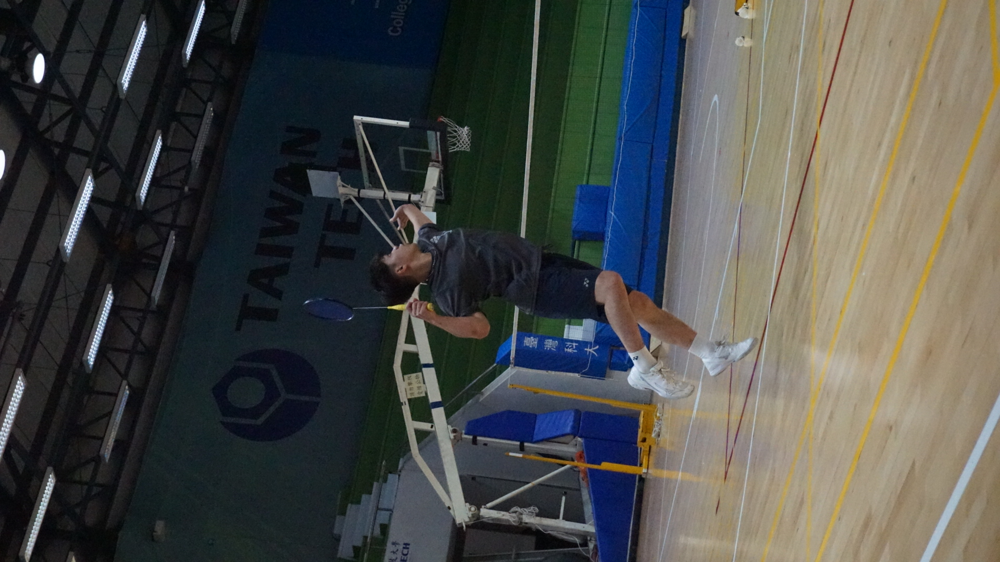
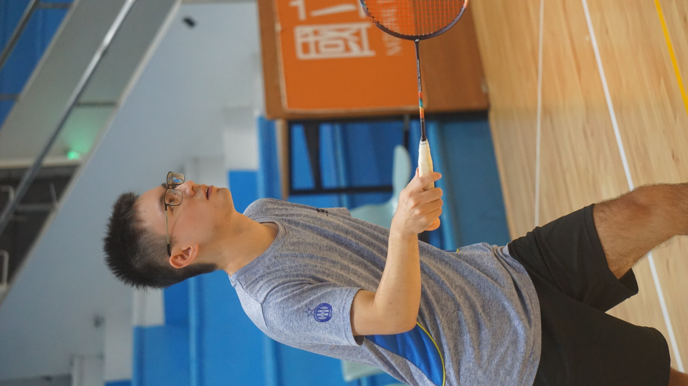
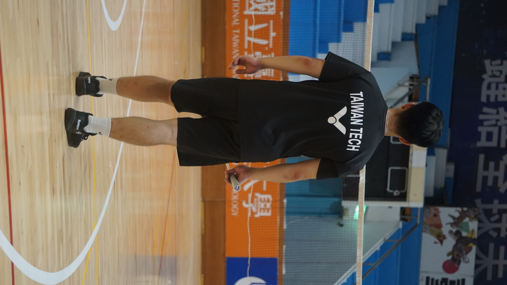
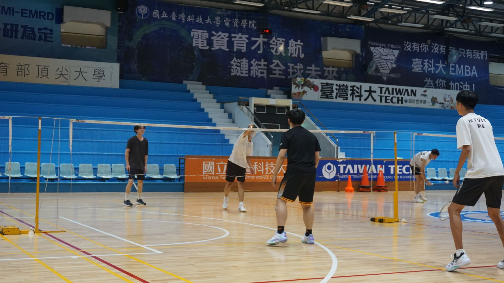
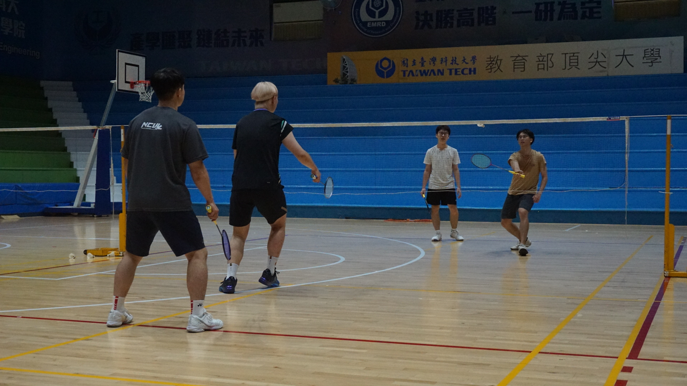

01
專注與紀律
羽球不僅是技術的展現，更是心智的鍛鍊。我們在每一次的訓練中建立團隊默契， 讓無畏的態度與運動家精神成為社員的內建基因。
臺科大羽球社提供一個友善、有節奏、能長期投入的練習環境。無論你是剛開始接觸羽球， 還是已經有固定打球習慣，都可以在這裡找到一起訓練、交流、累積默契的人。
固定練習，
也保留交流的空間
依據社團章程與近期社課企劃，社團持續以定期練習、技巧提升、團隊合作與健康運動為核心， 也會透過校內外交流，讓羽球不只是課後活動，而是一個能持續投入的社群。
我們希望每一次練習都有目的，每一次交流都有收穫。以下是社團網站目前最核心的三個方向。
羽球不僅是技術的展現，更是心智的鍛鍊。我們在每一次的訓練中建立團隊默契， 讓無畏的態度與運動家精神成為社員的內建基因。
拋棄傳統社團的無序等待。透過嚴格的上場標準，我們以精確的制度保障相同的打球時間， 讓每一份對羽球的熱忱都不被場下的等待所消耗。
無論你來自哪裡、說著什麼語言。透過持續的跨校交流與日常訓練，站上球場， 我們只用球技與態度來交朋友。
下面這些內容是依照現有企劃書與章程整理而來，能更具體看出社團平常的運作方向。
社課以固定時段進行，並依主題安排不同練習內容。除了基本技術，也會透過實戰對打讓大家熟悉節奏。
社團希望在合作與競爭中培養默契與榮譽感。對內重視團結與互助，對外則希望逐步提升整體羽球水準。
依現有合作企劃，社團也投入帶動中小學社團發展，透過交流課程與陪練，推廣羽球運動。
只要認同社團理念並完成入社程序，就能成為社員。社團也希望讓第一次參加的人能清楚理解報名方式、 活動節奏與參與規則。
從社課、對打到日常練習，這些畫面就是臺科大羽球社最真實的節奏。不是刻意擺拍，而是每一次移動、 每一次出拍累積起來的社團樣子。




